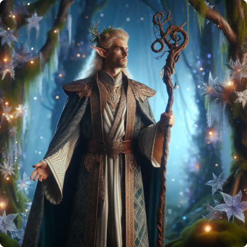
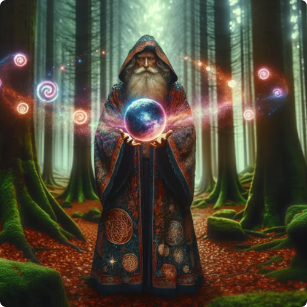
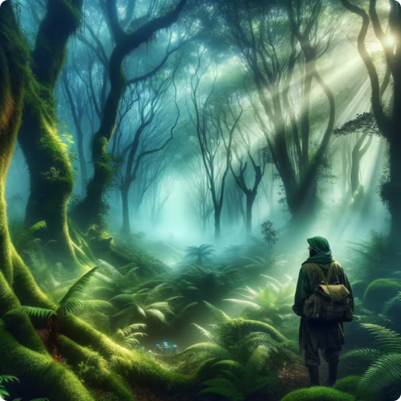
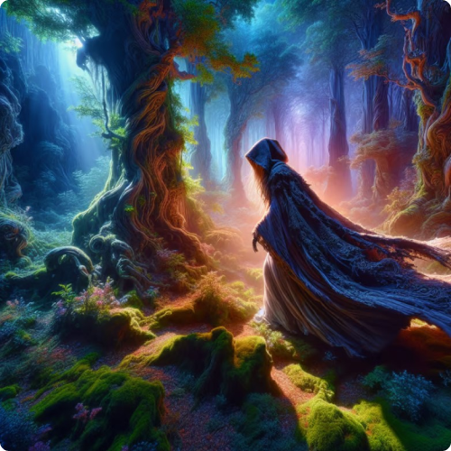

Nature Protection in Harmony with Ancient Forests

The History of Elves and Forests
Ancient elves always had a deep connection with the forests, which
they considered sacred and incredibly important for maintaining the
balance in the world. For them, the forest was not only a source of
life but also a spiritual center, a place where all the knowledge of
their ancestors was preserved and where numerous rituals took place to
ensure harmony between the world of humans and the natural forces.
From the very beginning, when the first elves began settling on these
lands, they felt themselves to be part of nature. They believed that
every tree, every stone, every stream had its own soul, and that their
duty was to protect and maintain this complex and interconnected
world. In each tree, they saw not just a plant but a living being with
its own significance for the entire forest.
- 
- 
The History of Elves and Forests
-
Elf elders, respecting these ancient truths, passed on their knowledge of how to maintain this balance to their descendants. The old elves often gathered deep in the forests, where, around the nightly fires, they told stories of the creation of the forests, of the divine spirits who protected them, and of the great forces of nature that needed to be in harmony. The stories were profound and rich in symbols, teaching the importance of every living element of the forest.
This knowledge was passed down in the form of legends, songs, and even magical rituals, allowing the elves to maintain their connection to nature and call upon the spirits of the forest for help in difficult times. All important decisions regarding the forest and its inhabitants were made collectively, at the gatherings of the elders, where every voice mattered. And although wisdom was passed not only through words but also through practices, the elves followed certain rituals that ensured the well-being and health of the forest.
Conflicts and the Struggle to Protect the Forests
And although the elves always sought to maintain peace and harmony,
their forests were not always safe. There were times when hostile
forces attempted to disrupt the balance of nature. Other peoples or
dark creatures tried to steal the power of the forest or destroy it
for their own gain. Throughout history, the elves fought to preserve
their forests, using their magic, wisdom, and the power of nature to
protect their sacred lands.
However, these conflicts were not always resolved through violence.
They taught that peaceful coexistence with all beings was only
possible through understanding and mutual respect. Therefore, the
elves also sought to teach those who disrupted the balance and even
find a way to reconcile, if possible. This was part of their deep
belief that nature should remain in harmony, not in a state of war.
- 
- 
The wisdom of the ancient elves about their interaction with nature became the foundation of their culture and way of life. They taught their descendants to respect all forms of life, protect the forests, and maintain balance in all aspects of existence. And though it was a long and difficult journey, one that involved overcoming many challenges, the elves continued their mission, passing on their knowledge through generations. And in this unique connection with nature, they found their true strength.